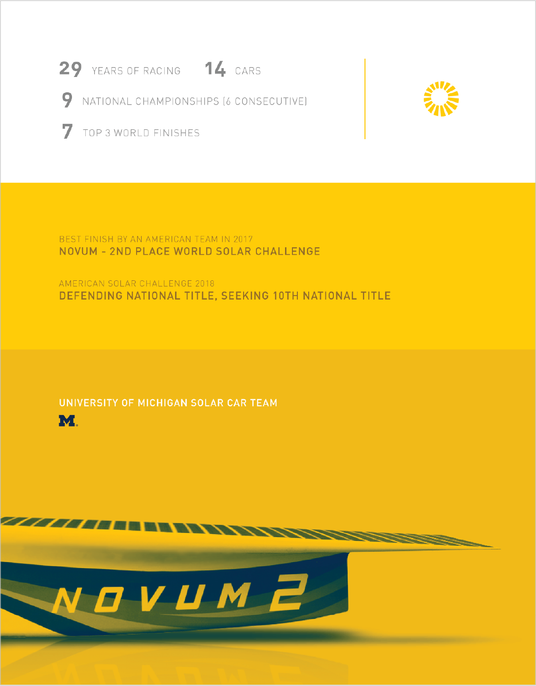
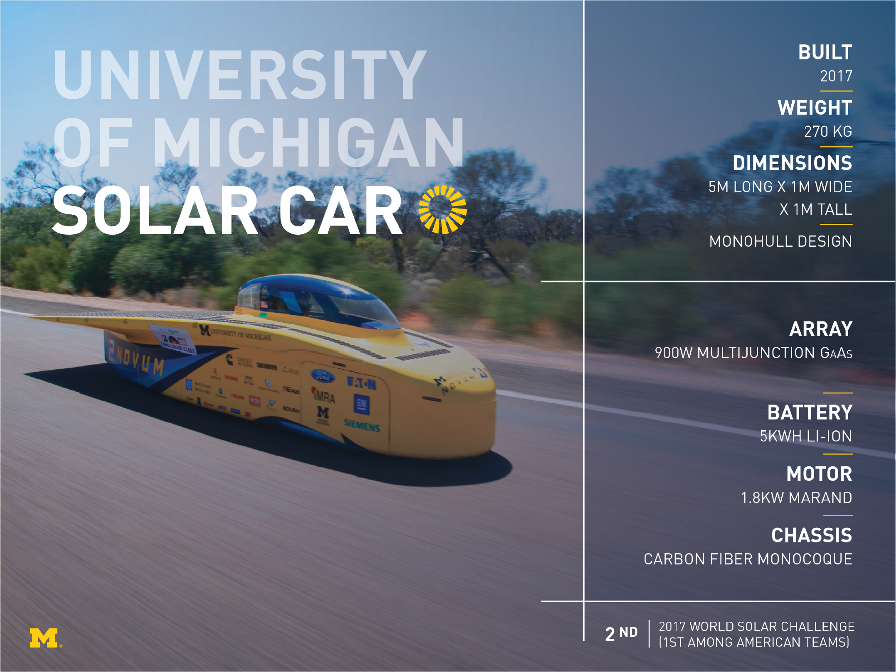
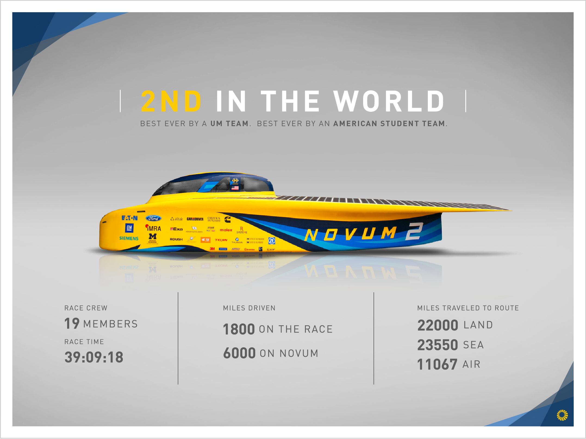
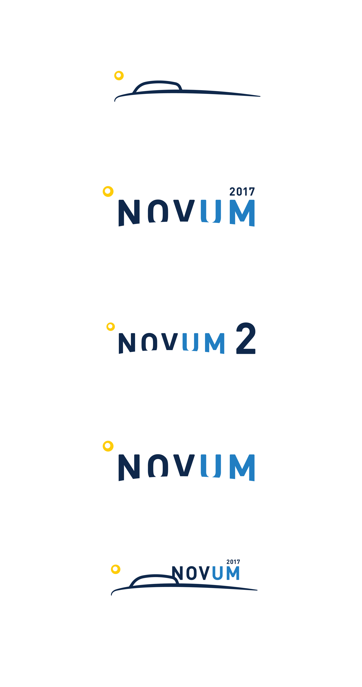
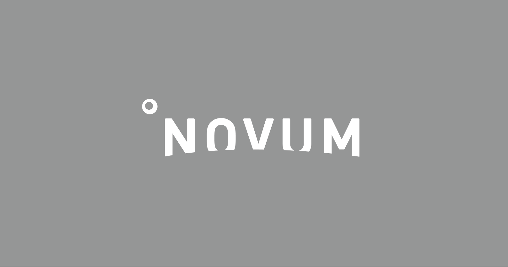

University of Michigan Solar Car Designing for business and sponsorship
My work is an aspect of the Marketing and Information Staff for the marching band
Graphic Design Videography
Individual designer Oversight from business leads

The Project
The Problem
The Michigan Marching Band needs stronger visual marketing efforts so they can build a wider and more professional marketing and social media presence.
Aside from introducing a new visual marketing strategy, the main problem that I encountered in designing for the Michigan Marching Band (MMB) was that members wanted to be respected for the athleticism, intensity, and tradition that goes into what we practiced day in and day out. My design work had to dismiss the classic “band nerd” cliche and act act as a representation of the professionalism and hard work that constructs the MMB.
My Role
My work falls under three main categories:
For each of these 3 categories, my role was to create visual components (graphics, videos, presentations, apparel, etc.) that made for a more engaging experience for the audience.
Note: I cannot share most of the public relation work due to non-disclosure agreements tied to certain information.
Design Leadership
In 2017, my role shifted to a leadership role as a second designer was hired. While we divided the design work between the two of us, much of my position was now focused on managing design activity, coaching the new designer, and building a small design system to simplify our work.
The Process
Balancing Dynamics
It is easy to be excessive. As much as I wanted to display hard work and intensity, there was a line that had to be drawn where things became too intense. For example, the fire, smoke, and lightning cliches that may work well for sport advertisements are a bit immoderate for an activity that also prides itself on artistry and form. Instead I tried to keep a simple, clean style consistent with brand guidelines of the University of Michigan. I chose to always use the most dynamic photography of our band as well as mirror subtle design cues from the University’s athletic department.
    
Pacing in Videography
Similar to the issue of being too intense, video introduced a challenge of not being too dull. Audio and motion components forced a focus on pacing, to ensure that videos were not too slow and boring, but also not to frantic. With this in mind, I decided to stray from using our fight song or halftime music as a soundtrack for videos and rather use our drumline cadences. The percussive drive would set an upbeat pace and add a layer of intensity without being too overbearing. Along with these soundtracks, I created most “hype videos” with consecutive short clips, no longer than three seconds set to the beat of the soundtracks.
Takeaways
When in Doubt, Play it Safe? (A.K.A Know Your Audience)
There is a time and place for experimental design work. As I quickly learned, even using too much yellow (Maize, for you true blue fans) can be off-putting for an audience that prefers not to deviate from traditional practices. Most designers want to experiment and have fun with designs, but with a professional, tradition-based organization like the MMB, it was best not to change too many things. While it may have been monotonous at times, keeping things simple, clean, and modern kept our followers happy.